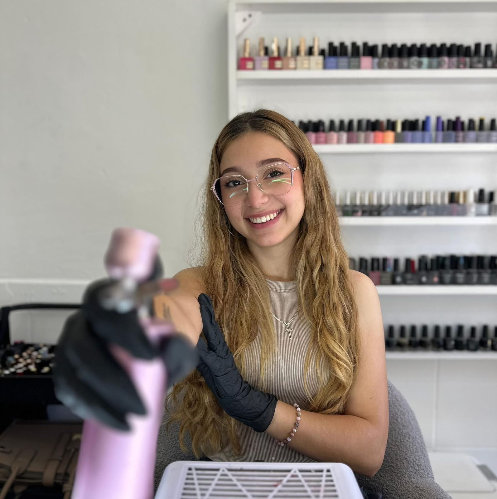

Nail Artist
Vale Bolaños · Manicure & Nail Art · Heredia, Costa Rica
#ValeNails
Mi historia y mi pasión por el arte de las uñas.

¡Hola! Soy Vale Bolaños, una apasionada artista de uñas con años de experiencia creando diseños únicos que realzan la belleza natural. Mi enfoque se basa en la atención al detalle, la higiene y la personalización para cada clienta, asegurando que cada set de uñas refleje su personalidad única.
Conociendo a Vale: pasión en cada diseño.
Perfección y detalle en cada trazo.
Más que un servicio tradicional, cada manicura es un proceso creativo. Desde un esmaltado semipermanente clásico hasta el nail art más elaborado, el trabajo manual garantiza un acabado premium que resalta la belleza natural de tus manos.
Combinamos técnicas modernas con una atención minuciosa. Trabajamos en un ambiente relajado en Heredia, con los mejores productos del mercado, para que tus uñas no solo se vean increíbles, sino que se mantengan sanas y fuertes.


Un vistazo a mis diseños
Pasá el cursor (o tocá en el celular) sobre cada foto para verla en grande.
Tocá una foto para ampliarla.
Todo pensado para tu comodidad
Desde la higiene hasta el último detalle del diseño, cuidando cada parte de tu cita.
Heredia, Costa Rica
Atiendo en Heredia, con fácil acceso y coordinación de horario por WhatsApp o Instagram. Escribime y coordinamos el mejor día para tu cita.
Un espacio pensado para vos
Cómodo, tranquilo y con todo el tiempo necesario para que tu diseño quede como lo imaginaste.
Lo que debes saber
Unos detalles simples para que tu cita fluya bien, de principio a fin.
Antes de escribirme
Heredia, Costa Rica
Reservemos tu espacio
Escribime por WhatsApp o Instagram, o dejame tu consulta acá abajo. Te respondo pronto.